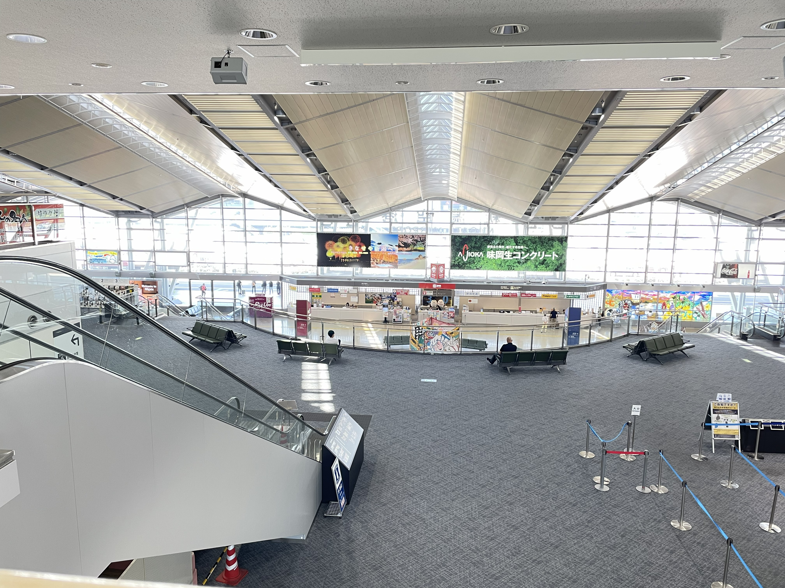
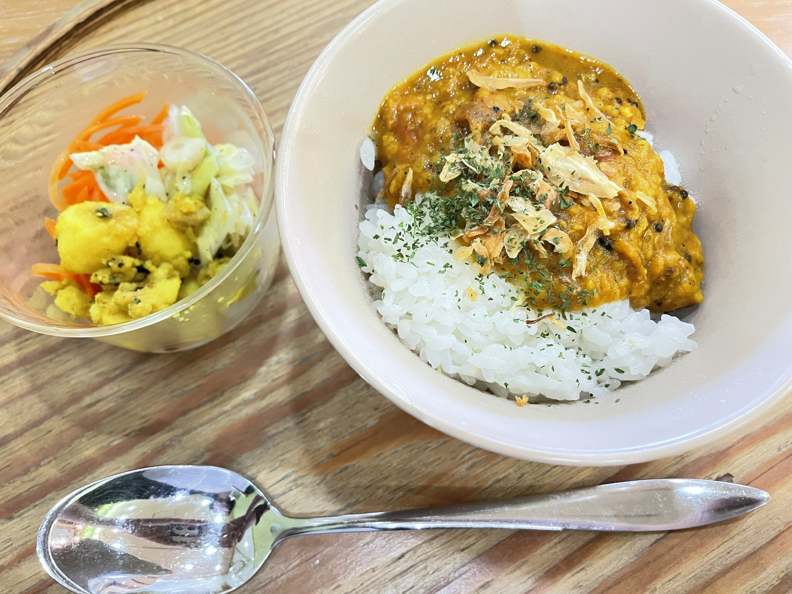
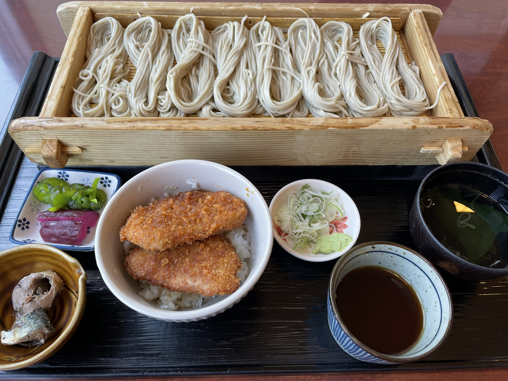
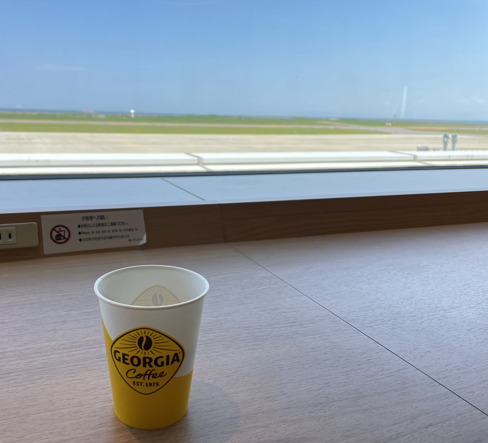

小さな飛行機で、新潟空港に降り立ちました。
新潟空港は、どんな空港なのだろう。
朝の9時前、手荷物を受け取って到着ロビーに出ると、そこは人の気配がほとんどない、澄んだ静寂な空間でした。
端から端まで見渡せそうな小さな空港です。

新潟空港 床に降りてきた、光の階段
「まだまだ時間がたっぷりあるから、ここで何か食べてから出掛けよう。」
空へ向かう透明な階段がありそうな、この空港の澄んだ静寂にもう少しひたっていたくて、ここでブランチすることにしました。
お店は、「spice by me」という喫茶店のような可愛いカレー屋さん。
季節のスパイス野菜が付いている、お茶碗一杯くらいのミニカレーと、ホットチャイを注文しました。
ほんのりお腹が空いていて、もう少しここにいたい私にちょうどいいな。
スマホを充電しながら、私もしばし充電です。
こうして、私の新潟旅がはじまりました。

「spice by me」のミニカレー
そして、翌日の空港はまた違う顔を見せてくれました。
お昼ごはんを空港で食べたかったので、11時前に空港へ。
お目当ては、旅の前に調べて食べてみたかった、海藻が練り込まれたお蕎麦、「へぎそば」です。
お店に一番乗りで入ると、目の前に滑走路が広がっていました。
お目当てのへぎそばが特等席で食べられるなんてうれしくなる。
メニューをじっくり見て、「へぎそば」と「タレかつ」のセットにしました。
透明感あるつややかなへぎそばは、リボンのように束ねられています。
そのひと束を取ってつゆに少し浸して、つるり…つるり… 、透き通る風が身体を通り抜けるみたい。
そんな気持ちよさに浸りながら、つるり…とお蕎麦を食べていると、どこからかこの静かな店内に、光をいっぱい浴びて育った向日葵のような声が聞こえてきました。
「そば食べたいー」
「たれかつー！」
「俺、海鮮丼〜」
静寂の中の、夏の光。
ひとあし早く夏休みの風が吹いたように、思い思いに食べたいものを発表しながら、赤白帽を被った小学生の集団がお店の前を通り過ぎていきました。
「ふふふ…いいでしょう〜」
私はまた、つるり…つるり…とお蕎麦を食べました。

「須坂屋そば」のへぎそばとタレかつ
店長さんらしきおじさんがお会計のあと、真っ直ぐに言いました。
「またお待ちしております。」
その声は、さっきの子どもたちの声の輝きと同じでした。
帰省の終わりの祖父の「待ってるよ」にも似ています。
ここが私の故郷だったような、突然心にあたたかいものが流れ込んで来たみたいな、そんな懐かしい幸せな気持ちでお店を出ました。
まだ30分ほど時間があったので、ラウンジに行ってみることにしました。
空いていて、私が好きなカウンターの窓側席もたくさんあいている。
しかも、広々とした座り心地の良いソファでうれしい。
滑走路には、なかなか飛行機がやって来ませんが、その代わり、滑走路の向こうに、うっすらと静かに輝く青い海が見えています。
まだ、時間がゆったり流れている場所がある。
まだ、心にあたたかいものが流れ込む瞬間がある。
そのことに、驚いているような、うれしいような心地がしました。
私はコーヒーを飲み干して、席を立ちました。
「ありがとうございました。」
さっきの「またお待ちしております」のあたたかい風を私も届けてみたくて、ラウンジを出る時そう言って、足早に保安検査場へ向かいました。
私の声は、まだ小さかった。

旅の終わり、新潟空港のラウンジにて
2026.6